Recent Work
Floors That Speak For Themselves
A look at the flake polyaspartic finishes we install across garages, homes, and businesses in Central Oregon.


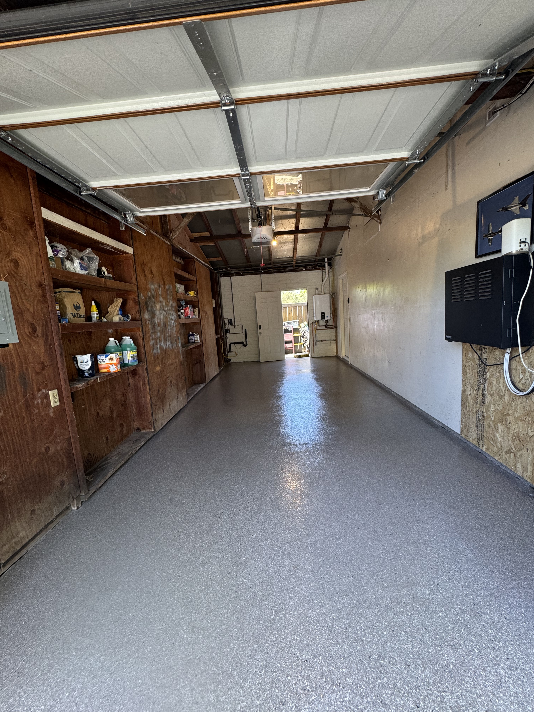
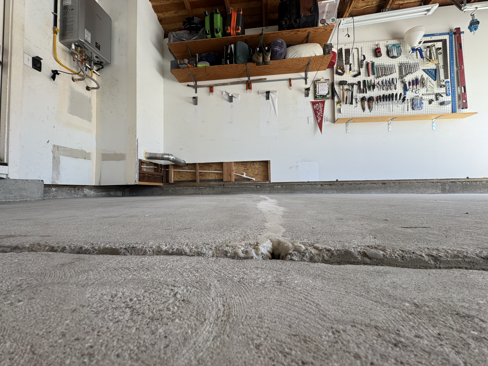
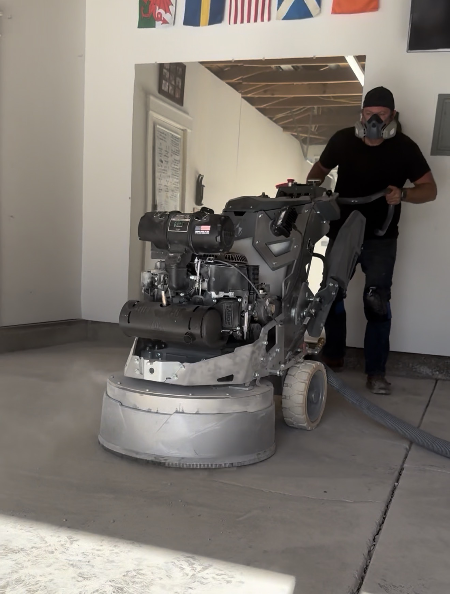
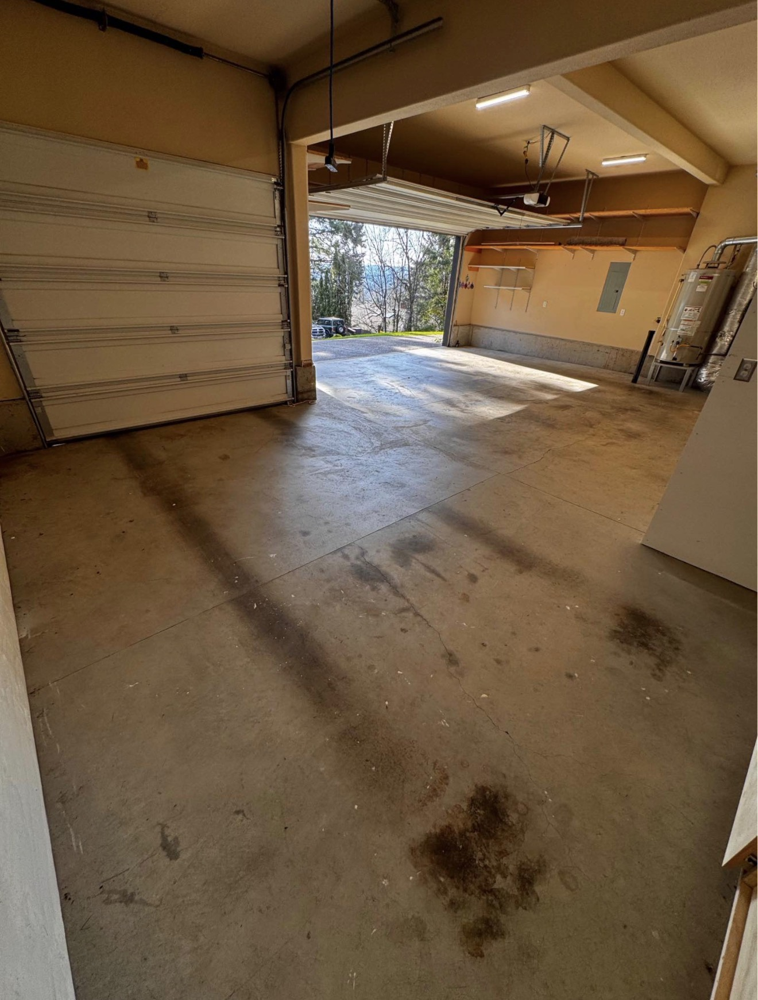
Buffalo Concrete Coatings installs unstoppable 1-Day flake polyaspartic floors for garages, homes, and businesses across Central Oregon. Backed by a 15-year warranty — built to outlast whatever gets thrown at it.
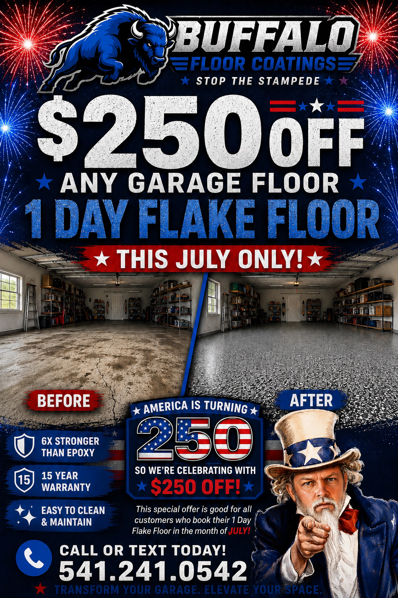
From a single-car garage to a full industrial warehouse, Buffalo Concrete Coatings has a system built to handle it — installed in as little as one day.
Our signature system is prepped, coated, and cured in a single day — so you get a showroom-quality floor without losing your weekend.
Durable, chemical-resistant, and easy to clean. Turn your garage into a space you're proud to park in — or work in.
Basements, patios, and living spaces get a beautiful, long-lasting flake finish that resists stains, scuffs, and moisture.
Retail floors, showrooms, and offices that need to look sharp and hold up to daily foot traffic, all day, every day.
Heavy-duty coatings engineered to withstand forklifts, chemicals, and constant wear in warehouses and production facilities.
Every project we install is backed by a 15-year warranty — real protection, not just a sales pitch.
Traditional single-component epoxy fades, chips, and yellows. Our flake floor system uses a 2-component polyaspartic coating — a tougher, faster-curing polymer technology — for a floor that looks better and lasts longer, installed in as little as one day.
Rapid-cure technology means most floors are done in a single day — walk on it in hours, not days.
Won't yellow or fade in direct sun, even on garages and patios that see full daylight year-round.
Stands up to hot tires without lifting or marking — a common failure point for cheap epoxy kits.
Shrugs off oil, gas, coolant, salt, and household chemicals without staining or breaking down.
Built for forklifts, foot traffic, and daily abuse — indoors or outdoors, garage or shop floor.
Multi-color vinyl flake blends hide dirt and imperfections while giving your floor a showroom look.
| Coating Comparison | Buffalo Flake System | Standard Epoxy |
|---|---|---|
| Install Time | As little as 1 day | 2–3 days |
| Return to Vehicle Traffic | 24–96 hours | 4–7 days |
| UV Stability | Yes — won't yellow | No — yellows over time |
| Hot Tire Pickup Resistance | Yes | No |
| Chemical Resistance | Extremely High | Moderate |
| Abrasion Resistance | Extremely High | Moderate |
| Warranty | 15 Years | Typically 1–5 years |
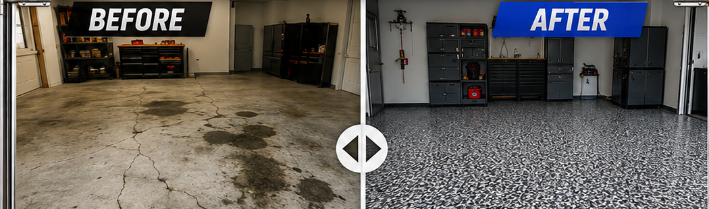
Call or fill out our form. We'll assess your space and give you honest, upfront pricing — no cost, no pressure.
We work around your timeline and get you on the calendar fast — most jobs booked within days.
Our crew preps, coats, and finishes your floor with a premium 2-component flake polyaspartic coating — done in a single day.
Walk on it, park on it, work on it — and rest easy knowing it's backed by our 15-year warranty.
Most flake floor coatings fail because of what happens before the coating goes down. Here's exactly how we prep, coat, and finish every floor — done right the first time, in a single day.
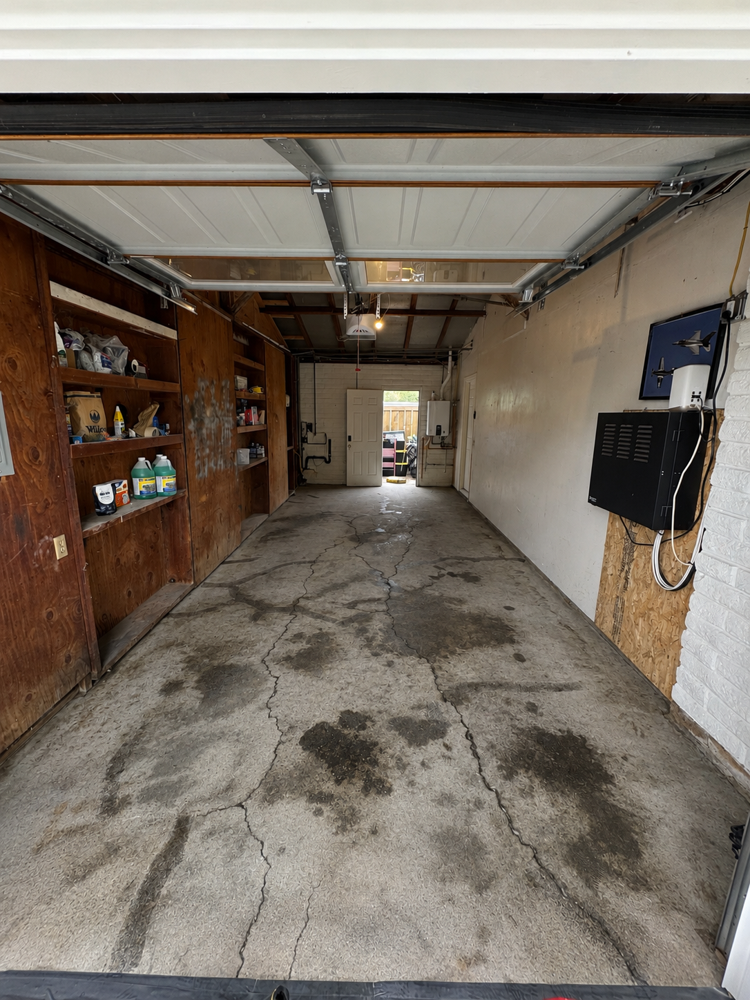
Every floor starts with mechanical diamond grinding — not acid etching. We open the pores of the concrete so the coating achieves a true mechanical bond that won't peel or delaminate. Edges, corners, and vertical surfaces are hand-ground and vacuumed clean of all dust and debris.
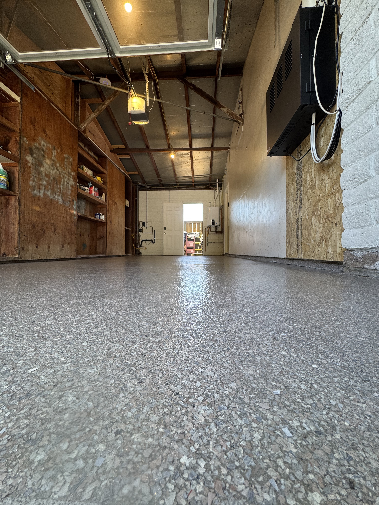
Cracks, pits, and old spalled concrete are routed out and filled with a fast-curing polyurea filler, then ground flush and smooth. This step alone is why our floors hold up to Bend's freeze-thaw cycles better than a bare epoxy job.
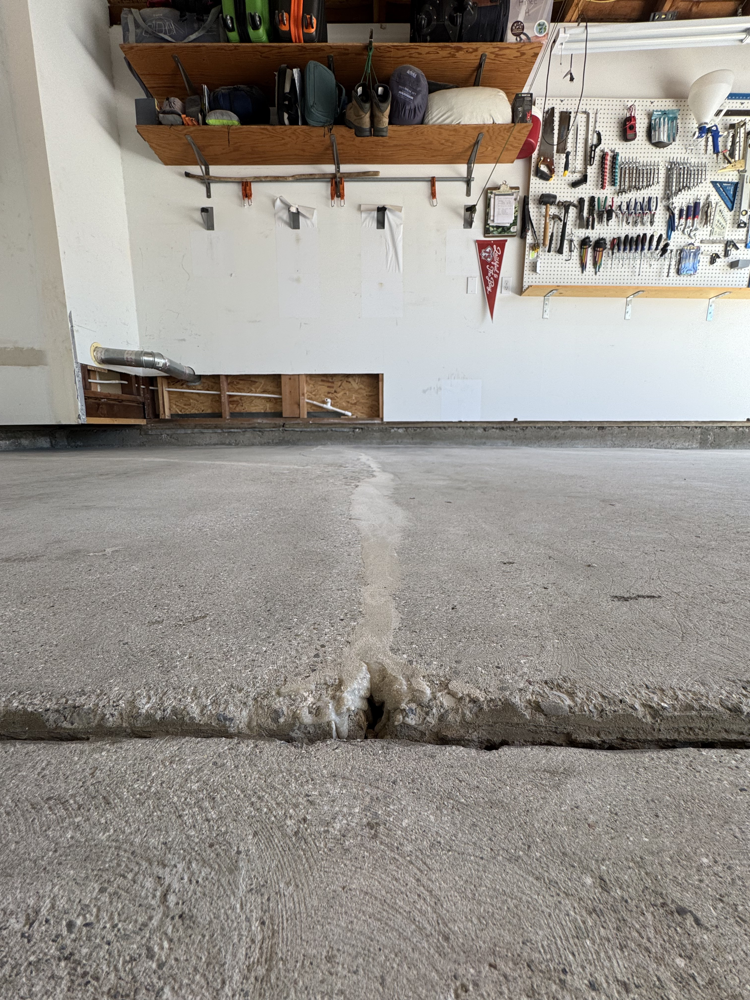
A 2-component pigmented base coat is rolled onto the entire floor and up all vertical surfaces for a seamless look. This layer is what the decorative flakes bond to, so it's applied heavy and even — no thin spots, no shortcuts.
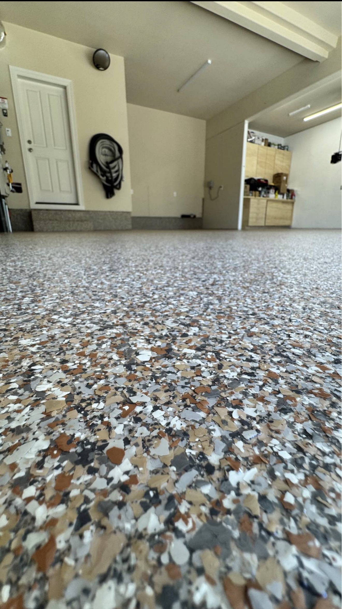
While the base coat is still wet, our crew broadcasts decorative flakes to full refusal — meaning we apply far more material than needed so every square inch is covered 100%, with no bare patches once excess flake is swept away.
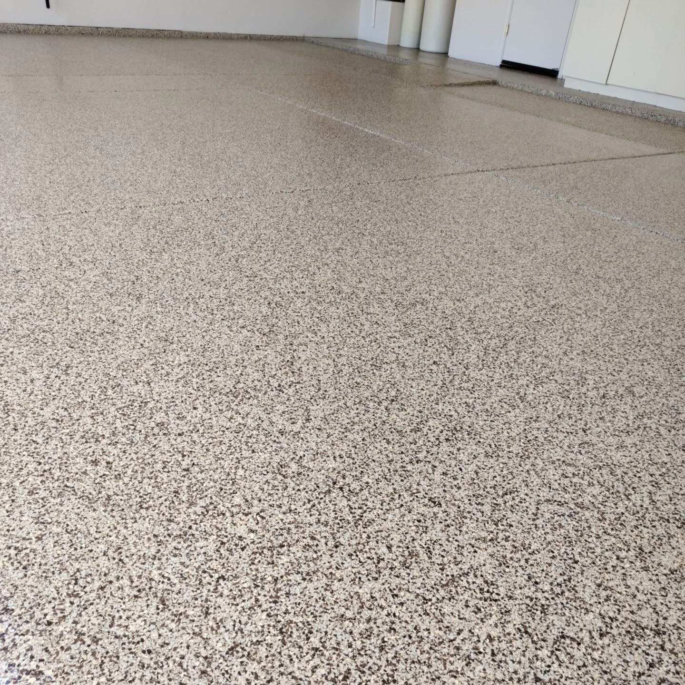
A durable clear topcoat is sealed over the flakes for a showroom finish that resists stains, chemicals, hot tires, and daily abuse. Walk on it same day, park on it soon after — and it's backed by our 15-year warranty.
From bare concrete to a showroom-tough finish — here's what "Stop the Stampede" looks like on the job.
A look at the flake polyaspartic finishes we install across garages, homes, and businesses in Central Oregon.




We coat every floor with materials supplied by Crown Polymers — a trusted manufacturer of high-performance industrial flooring systems engineered for abrasion resistance, chemical resistance, and long-term durability. It's the same caliber of coating used in manufacturing plants, breweries, and commercial kitchens, backed by our 15-year warranty.
Every 1-Day Flake Floor is finished with a full broadcast of premium 1/4" color chip. Pick the blend that matches your style — we'll bring a physical sample to your free estimate so there are no surprises.
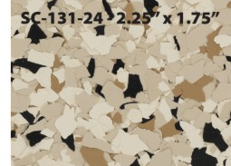
Shoreline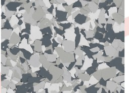
Gravel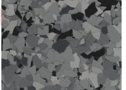
Nightfall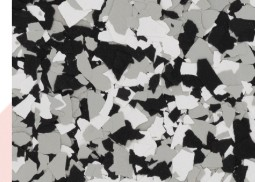
Domino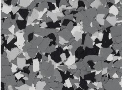
Wombat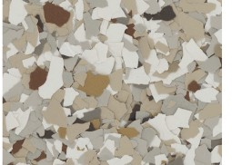
Creekbed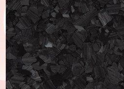
Carbon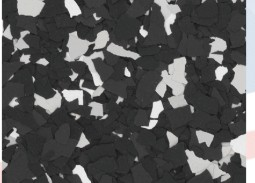
Raven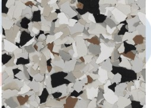
Coyote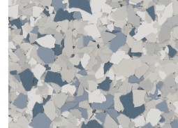
Tidal Wave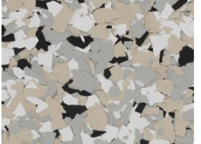
Cabin Fever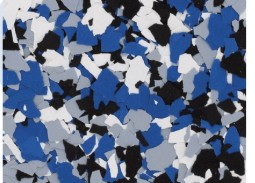
OrbitColor approximates the actual chip. Lighting, texture, and application may cause slight variances — we always confirm your exact blend before install day.
Our fully wrapped fleet is out prepping and installing 1-Day Flake Floors across Bend and the surrounding area — hard to miss, easy to trust.
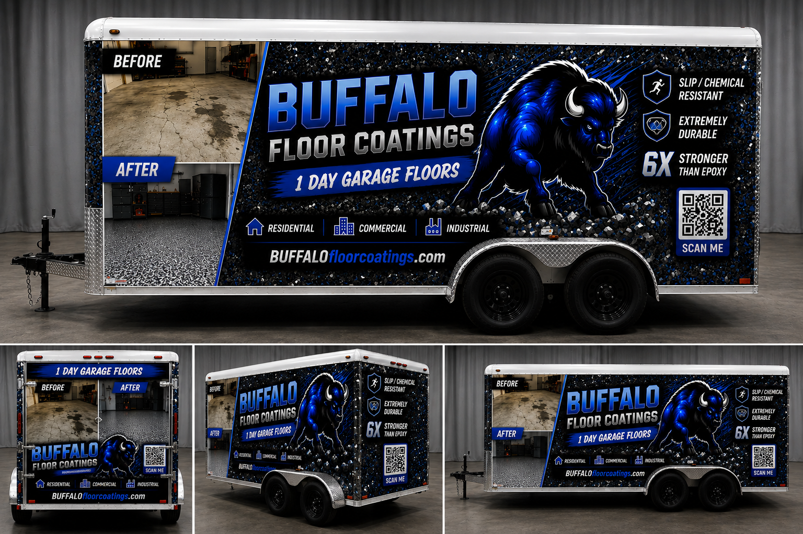
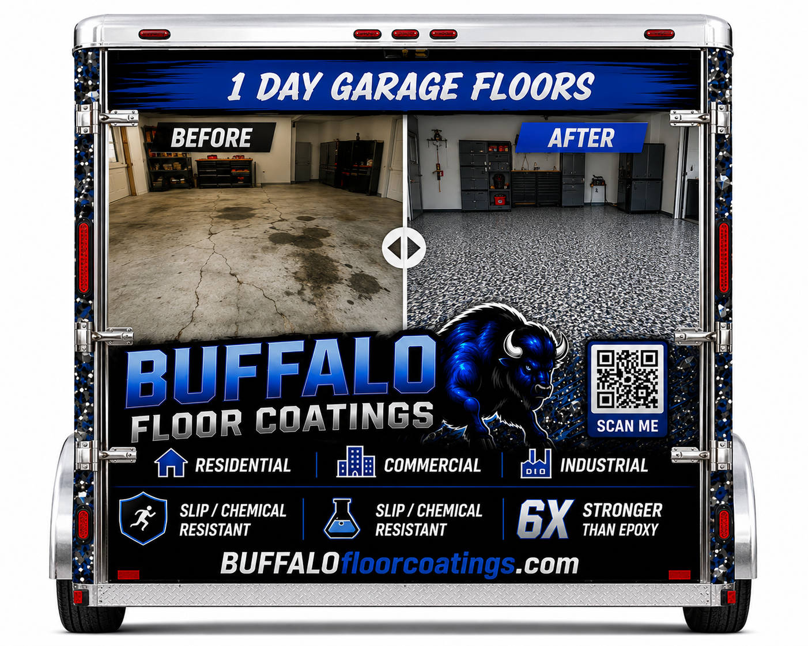
Tell us about your space and we'll get back to you fast with honest pricing and a plan to get your 1-Day Flake Floor installed — backed by our 15-year warranty.
Fill this out and we'll follow up within 1 business day.
No spam, no pressure — just a straight answer and a fair price.
A member of the Buffalo Concrete Coatings team will reach out shortly. For faster service, call us at 541.241.0542.